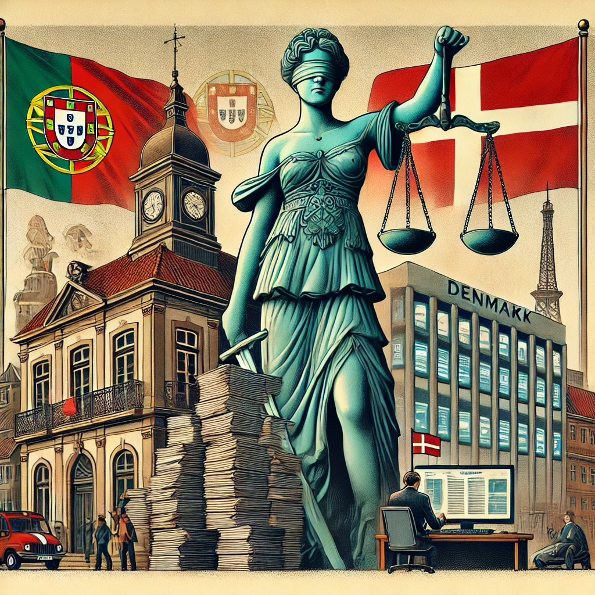

A recente prescrição do alegado caso de cartel da banca em Portugal veio reforçar uma perceção generalizada entre os cidadãos: a justiça parece servir apenas aqueles que dela se conseguem esquivar. Enquanto pequenas empresas e indivíduos enfrentam processos céleres e implacáveis, os poderosos beneficiam de um sistema que permite arrastar processos até à sua caducidade. Este fenómeno não é novo, mas a frequência com que ocorre levanta questões sérias sobre a equidade e a eficácia do sistema judicial português.
Os tribunais portugueses são frequentemente criticados pela lentidão na resolução dos processos, particularmente em casos de grande complexidade financeira e económica. O 2024 EU Justice Scoreboard destaca que Portugal continua a apresentar tempos processuais elevados, especialmente nos tribunais administrativos e fiscais, onde muitas destas matérias são tratadas. A demora permite que recursos e expedientes legais sejam utilizados para prolongar indefinidamente os casos, levando frequentemente à prescrição dos crimes.
Em contrapartida, países como a Dinamarca apresentam um sistema judicial altamente eficiente. A média de tempo para a resolução de casos de corrupção e crimes financeiros é significativamente inferior à de Portugal. A chave para essa eficiência está na digitalização dos processos, na autonomia dos órgãos de investigação e num quadro legal que limita as possibilidades de recurso para evitar manobras dilatórias.
A morosidade da justiça portuguesa tem beneficiado, principalmente, figuras públicas e empresas influentes. O caso BES, a Operação Marquês e, mais recentemente, o cartel da banca são exemplos de como processos judiciais envolvendo elites políticas e económicas se arrastam por anos sem uma conclusão definitiva. A utilização sistemática de recursos, impugnações e outros expedientes protelatórios acaba por minar a confiança da população no sistema.
Já para o cidadão comum, a realidade é bastante diferente. Pequenos empresários, trabalhadores e contribuintes veem-se muitas vezes sujeitos a execuções fiscais e processos judiciais rápidos e implacáveis. O contraste entre a justiça célere aplicada ao cidadão comum e a lentidão dos processos envolvendo os poderosos cria um sentimento de desigualdade e frustração social.
A Dinamarca é frequentemente citada como um dos países com o sistema judicial mais eficiente e equitativo do mundo. Entre os fatores que contribuem para essa eficácia estão:
Se Portugal deseja reverter a atual situação, é imperativo que reformas estruturais sejam implementadas com urgência. O fortalecimento da autonomia do Ministério Público, a limitação dos recursos excessivos e a digitalização completa do sistema judicial são passos fundamentais para uma justiça mais célere e equitativa.
A justiça portuguesa precisa de uma transformação profunda para garantir que o seu funcionamento não favorece os poderosos em detrimento do cidadão comum. O contraste com a Dinamarca mostra que um sistema mais eficiente e equitativo é possível, mas exige vontade política e reformas estruturais. Enquanto essas mudanças não ocorrerem, a sensação de impunidade continuará a corroer a confiança da população na justiça e nas instituições do país
O artigo foi elaborado com uma análise detalhada sobre a morosidade da justiça em Portugal e uma comparação com o sistema dinamarquês.
Créditos para o ChatGPT e DeepSeek na colaboração neste artigo.
Leia também:
Portugal 2026: Um Orçamento de Estado Disruptivo e Inovador criado pela IA.